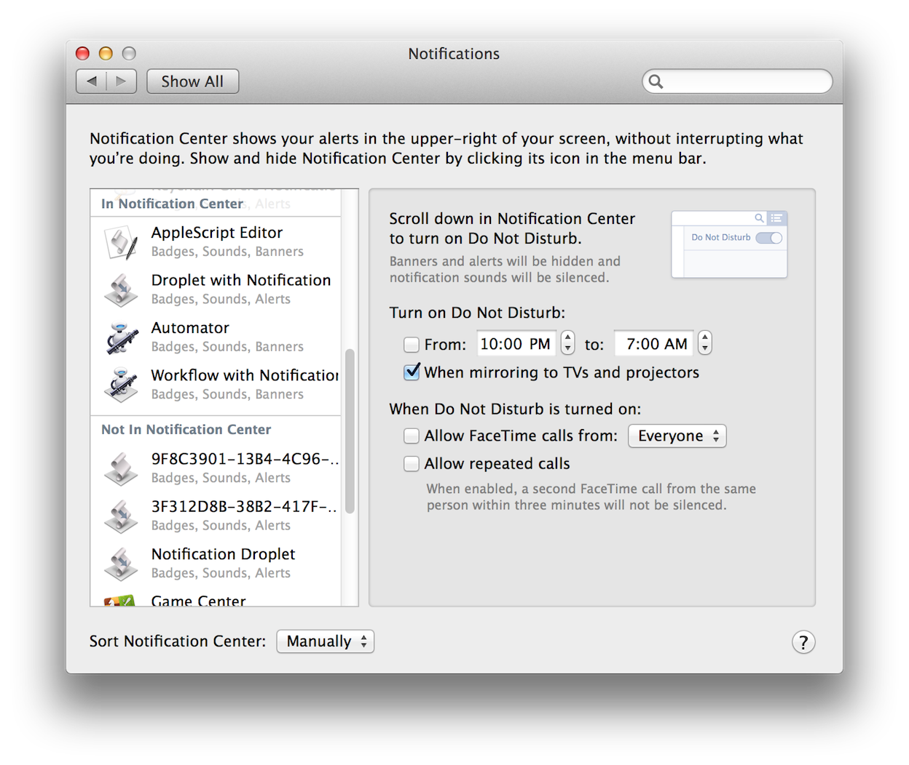
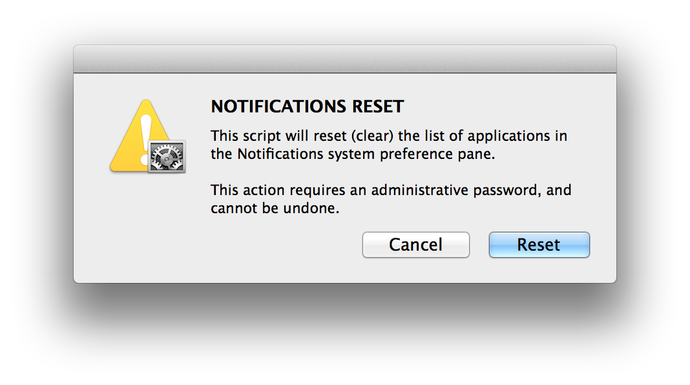
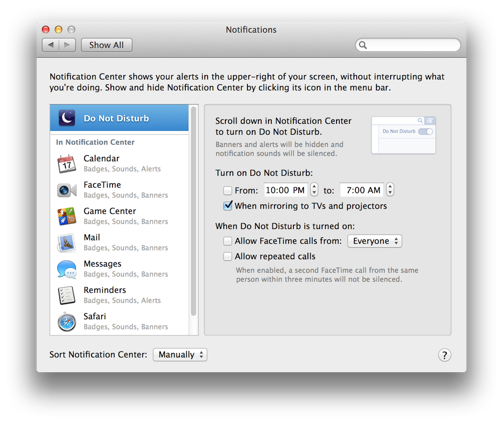

Developers of automation solutions may find that in the process of creating and testing applets with notification abilities, the Notification Center list may become cluttered with applets that are no longer active, or have been assigned random-character names by the OS. This can occur if an applet’s name, or its bundle identifier, is changed during the development process (⬇ see below) :

(⬆ see above) The Notification Center list containing inactive and randomized-named automation applets.
TIP: To avoid clutter in the Notification Center list, make sure the automation applet’s name and bundle identifier are finalized before running them for the first time.
If the Notification Center list becomes cluttered, you can use the script tool provided below, to reset the list to its default set of notifying applications (Calendar, FaceTime, Game Center, Mail, etc.).
Download the Reset Notifications List applet. IMPORTANT: All custom notification settings will be deleted during the reset process.

(⬆ see above) The opening dialog for the Notification Center Reset applet.
(⬇ see below) The Notification Center reset to its default settings in OS X Mavericks (v10.9).
